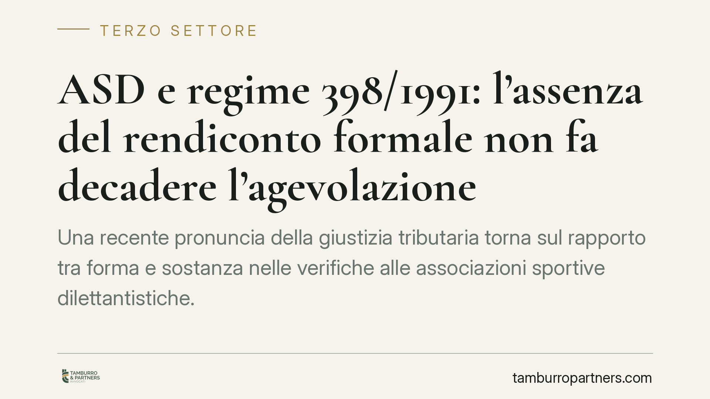

ASD e regime 398/1991: l'assenza del rendiconto formale non fa decadere l'agevolazione
Una recente pronuncia della giustizia tributaria torna sul rapporto tra forma e sostanza nelle verifiche alle associazioni sportive dilettantistiche. L'assenza di un rendiconto formale non comporta, di per se', la decadenza dal regime agevolato della Legge 398/1991, se l'attivita' sportiva e' reale e la gestione documentata. Resta centrale l'onere della prova a carico dell'Amministrazione finanziaria.

Il caso
La questione riguarda un'associazione sportiva dilettantistica (ASD) alla quale l'Agenzia delle Entrate contestava la decadenza dal regime agevolato previsto dalla Legge 398/1991, sulla base dell'assenza di un rendiconto redatto in forma rigorosa. Secondo la decisione, l'irregolarita' formale non e' sufficiente a disconoscere il regime quando l'attivita' istituzionale risulti effettiva e la gestione sia comunque ricostruibile dalla documentazione disponibile, incluse prove fotografiche delle sponsorizzazioni.
> Nota di verifica. La pronuncia e' indicata dalle fonti come sentenza della Corte di Giustizia Tributaria di primo grado di Latina (n. 1159, con riferimento all'anno 2026). Numero, anno e sezione non risultano a oggi verificabili in modo autonomo: li riportiamo con riserva. Consigliamo di acquisire il testo integrale prima di farne uso in sede difensiva. Trattandosi inoltre di decisione di primo grado, resta impugnabile e non costituisce orientamento consolidato.
Inquadramento normativo
La Legge 398/1991 consente alle ASD (e ad alcuni altri enti) di accedere a un regime fiscale forfetario agevolato, con semplificazioni contabili e determinazione forfettaria di IVA e imposte sui redditi. L'accesso e' subordinato al rispetto di un limite di proventi commerciali: la soglia e' attualmente fissata in 400.000 euro annui. Il superamento di tale limite comporta la fuoriuscita dal regime a decorrere dal mese successivo.
Sul piano probatorio, il riferimento e' l'art. 7, comma 5-bis, del d.lgs. 546/1992, introdotto dalla riforma del processo tributario, che pone a carico dell'Amministrazione l'onere di provare in giudizio le violazioni contestate. Non e' l'associazione a dover dimostrare la propria correttezza in assenza di contestazioni circostanziate: e' l'Ufficio a dover fornire la prova dei fatti su cui fonda la pretesa.
La distinzione tra violazioni formali e violazioni sostanziali, del resto, e' coerente con l'orientamento della giurisprudenza di legittimita', secondo cui le irregolarita' meramente formali - che non incidono sulla base imponibile ne' ostacolano l'attivita' di controllo - non giustificano, da sole, il disconoscimento di un regime agevolato. Cio' che rileva e' l'effettivita' sostanziale dell'attivita' svolta.
Implicazioni pratiche
Per un'ASD in regime 398/1991, la decisione conferma un principio utile ma non autorizza disinvolture gestionali. Un'ASD priva di qualsiasi traccia gestionale resta esposta: la tolleranza riguarda l'irregolarita' formale, non il vuoto documentale. La difesa regge quando esiste un corredo probatorio coerente - contratti, incassi, fotografie degli impianti e dei cartelloni sponsorizzati, movimentazioni bancarie - idoneo a dimostrare la realta' dell'attivita'.
Le prove fotografiche delle sponsorizzazioni, in questo quadro, rafforzano in modo significativo la posizione probatoria dell'associazione, perche' collegano la spesa pubblicitaria a un'attivita' concretamente visibile.
Il fronte meno indulgente resta quello della tracciabilita' finanziaria. La Legge 398/1991 impone che incassi e pagamenti di importo pari o superiore a 1.000 euro avvengano con strumenti tracciabili (bonifico, carte, assegni). Su questo profilo la giurisprudenza e la prassi sono rigorose: la violazione puo' incidere sulla permanenza nel regime, a prescindere dalla regolarita' del rendiconto.
Cosa fare in concreto
- Conservate un archivio ordinato di contratti di sponsorizzazione, fatture e documentazione fotografica che attesti l'effettiva esecuzione della prestazione pubblicitaria.
- Movimentate incassi e pagamenti pari o superiori a 1.000 euro esclusivamente con strumenti tracciabili e archiviate le relative ricevute.
- Monitorate costantemente i proventi commerciali per non superare la soglia di 400.000 euro annui, che determina la fuoriuscita dal regime.
- Redigete comunque il rendiconto annuale e tenete aggiornati i registri previsti: la sostanza protegge, ma la forma riduce il contenzioso.
- In caso di verifica della Guardia di Finanza o dell'Agenzia delle Entrate, richiedete sempre la specificazione delle violazioni contestate e verificate che l'Ufficio assolva al proprio onere probatorio.
La pronuncia, se confermata nei suoi contenuti, offre un argomento difensivo, non una franchigia. L'effettivita' dell'attivita' sportiva e la coerenza della documentazione restano il presidio piu' solido.
Contributo informativo a cura di Tamburro & Partners Avvocati - Avv. Giuseppe Tamburro. Non costituisce parere legale.
Ogni ente del terzo settore ha la sua storia.
Se rappresenti un ETS e vuoi un confronto su governance, RUNTS o fiscalità, scrivi allo studio. Ti rispondiamo entro un giorno lavorativo.